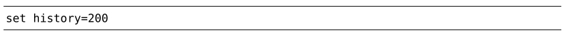
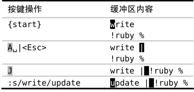
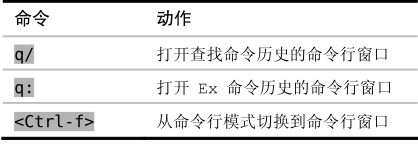

，然后再按<Up>键遍历之前的 Ex 命令。这一次，Vim不会显示所有的历史命令，而是会对列表进行过滤，只有以单词“help”开头的 Ex 命令才会被包含在列表中。
，然后再按<Up>键遍历之前的 Ex 命令。这一次，Vim不会显示所有的历史命令，而是会对列表进行过滤，只有以单词“help”开头的 Ex 命令才会被包含在列表中。技巧34回溯历史命令
Vim 会记录命令行模式中执行过的命令，并提供了两种方式回溯这些命令，用光标键回滚之前的命令或调出命令行窗口查看先前的命令。
Vim 会记录命令行模式下的命令历史，并且可以很容易地回溯之前的命令，因此对于比较长的 Ex 命令来说，我们用不着在命令行中多次输入它。
我们先按:键切换到命令行模式，在保持提示符为空的情况下按<Up>键，此时最后执行的那条Ex命令就会被填充到命令行上。再接着按<Up>键的话，就可以回到更早的 Ex 历史命令；按<Down>键的话，则会沿相反方向滚动。
现在，我们尝试先输入:help，然后再按<Up>键遍历之前的 Ex 命令。这一次，Vim不会显示所有的历史命令，而是会对列表进行过滤，只有以单词“help”开头的 Ex 命令才会被包含在列表中。
Vim 缺省会记录最后20条命令，对内存越发便宜的现代计算机来说，保存更多历史命令只是小菜一碟，因此我们可以修改‘history’选项，以提高其保存的上限。你可以试着把下面这行内容加入vimrc文件：

注意：命令历史不仅是为当前编辑会话记录的，这些历史即使在退出Vim再重启之后仍然存在（参见:h viminfo），因此提高历史记录的数目非常有价值。
Vim 不仅会记录 Ex 命令的历史，它也会为查找命令单独保存一份历史记录。在按/调出查找提示符后，用<Up>和<Down>键就可以正向或反向遍历之前的查找记录。从本质上讲，查找提示符只是命令行模式的另一种形式。
结识命令行窗口
像插入模式一样，命令行模式适合从头开始构建命令，但它却不是一个编辑文本的好地方。
在回溯历史命令时，避免使用光标键
除了<Up>和<Down>键外，也可以用<C-p>和<C-n>组合键来反向或正向遍历命令历史。使用这些映射项的好处是不需要把手移到小键盘区，但<C-p>和<C-n>命令有个缺点，它们不会像<Up>和<Down>那样对历史命令进行过滤。
通过创建下面的自定义映射项，我们可以把二者的优点结合到一起：
假设我们正在写一个简单的Ruby脚本，然后发现每做出一个修改时，都会执行下面两条命令：
➾:write
➾:!ruby %
在接连执行了几次这两条命令后，我们意识到可以简化工作过程，把这两条命令合为一条。这样，以后就可以从历史中选择该完整命令并再次执行：
➾:write | !ruby %
这些命令都已经在历史中了，所以我们不必从头输入整条命令。但要怎样才能把历史中的两条记录合并成一条呢？请输入q:，先结识一下命令行窗口（参见:h cmdwin）。
命令行窗口就像是一个常规的 Vim 缓冲区，只不过它的每行内容都对应着命令历史中的一个条目。我们可以用k及j键在历史中向前或向后移动，也可以用 Vim 的查找功能查找某一行。在按下<CR>键时，将会把当前行的内容当成Ex命令加以执行。
命令行窗口的好处在于它允许我们使用 Vim 完整的、区分模式的编辑能力来修改历史命令。我们可以用任何习以为常的动作命令进行移动，也可以在高亮选区上操作，或是切换到插入模式中。我们甚至还能对命令行窗口中的内容执行 Ex 命令。
在按q:调出命令行窗口后，我们就可以像下面这样解决问题：

修改完后，按<CR>就会执行:update | !ruby %命令，就好像我们在命令行输入了这条命令一样。
当命令行窗口处于打开状态时，它会始终拥有焦点。这意味着，除非关闭命令行窗口，否则我们无法切换到其他窗口。要想关闭命令行窗口，我们可以执行:q命令（就像关闭普通 Vim 窗口那样），或是按<CR>。
注意：当我们在命令行窗口内按<CR>时，该命令在活动窗口的上下文中执行。活动窗口指的是在调出命令窗口前，处于活动状态的那个窗口。当命令行窗口处于打开状态时，Vim 并不会提示哪个窗口是活动窗口，因此如果你用了分割窗口的话，需要特别留意。
假设我们正在命令行上构建一条 Ex 命令，做到一半时，才意识到需要更强大的编辑能力，这时该怎么办呢？当处于命令行模式下时，我们可以用<C-f>映射项切换到命令行窗口中，此前已经输入到命令行上的内容仍然会得以保留。下表总结了打开命令行窗口的几种方式：

q:命令和:q命令很容易被搞混。我敢肯定我们都曾经不小心打开过命令行窗口，而实际上我们只是想退出 Vim。这的确让人羞赧，因为这个功能是如此的有用，但是很多人在他们第一次（意外）遭遇它时却感觉很沮丧。要看命令行窗口的另一个应用实例，请跳到技巧85。